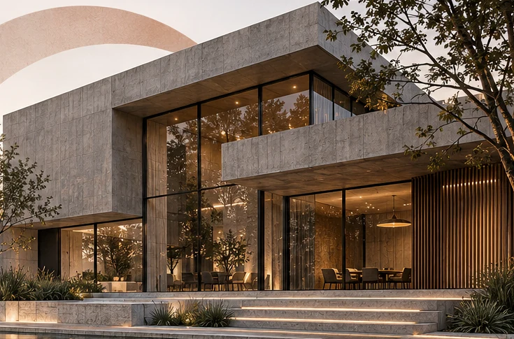
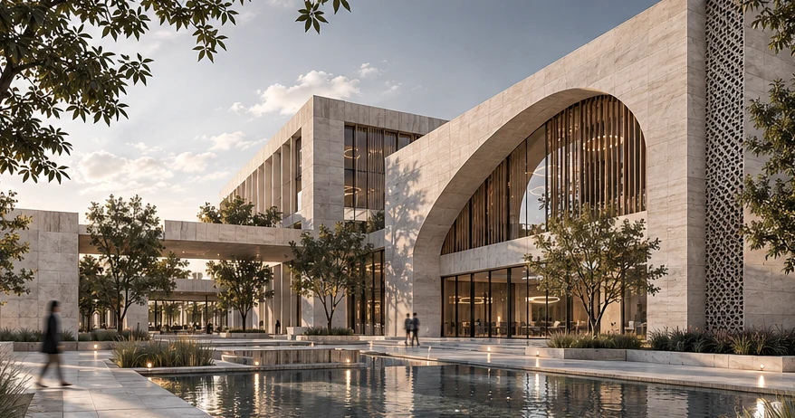
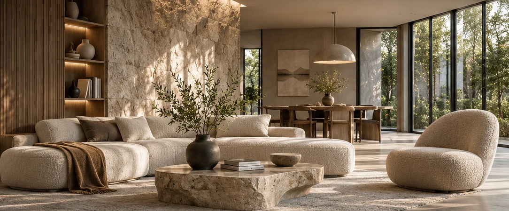

Spaces shaped
by imagination.
Narges Salmanzadeh is an architectural designer exploring the space between contemporary design, digital craft and human experience.

FIG. 01 — ARCHITECTURAL EXPLORATIONArchitecture is more than a visual statement. It is a careful conversation between form, function and feeling.

↗Architectural Complex Design
A contemporary architectural complex exploring spatial coherence, functional organization and a refined architectural language.

↗Interior Visualization Project
An exploration of the relationship between material, light, mood and lived interior space.
 ↗
↗Exterior Perspective Development
Architectural perspectives focused on facade character, composition, atmosphere and urban context.
From concept to clarity
Think in space
Explore concepts, spatial relationships and the experience a place creates.
Model with precision
Translate design intent into coordinated models and architectural drawings.
Visualize possibility
Use visualization and AI-assisted workflows to communicate atmosphere, materials and light.